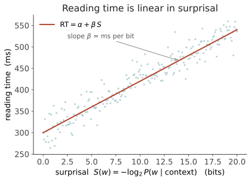

本页目录
信息 II · 可预测性与加工难度
对标：Hale 2001、Levy 2008（surprisal theory）、Smith & Levy 2013（线性关系）、Futrell 等 lossy-context ｜ 前置：info-01 ｜ 证据地位：【实】——这是信息论对人脑加工的一条定量、可重复的定律，本课少见的"心理学里的物理定律"级结果。 核心断言，一句话：读一个词的难度，正比于它在上下文中有多"出人意料"。 而"出人意料"有精确定义——它就是这个词的 surprisal。这页是甲问（预测→能力）在人这一侧的最硬证据。
1. surprisal 的定义
给定前文 \(w_{1:i-1}\)，第 \(i\) 个词的 surprisal（自信息 / 惊异度）：
- 高概率词（"the cat sat on the ___" → "mat"）：\(P\) 大 → surprisal 小 → 几乎不费力。
- 低概率词（"…on the ___" → "helicopter"）：\(P\) 小 → surprisal 大 → 加工吃力。
注意 \(S(w_i)\) 正是 info-01 熵的逐项：\(H = \mathbb{E}[S]\)，熵是 surprisal 的期望。熵刻画整条语言信道的平均难度，surprisal 刻画此刻这一个词的瞬时难度。
2. surprisal 假说：可预测性 = 加工代价
Hale–Levy 的理论主张：理解一个词所需的认知努力，正比于它携带的信息量（surprisal）。信息越多 = 越需要更新对句子的预期 = 越费加工资源。
这不是空想，它有可测量的行为学签名：
- 阅读时间（自定步速阅读 / 眼动注视时长）随 surprisal 上升；
- N400 脑电成分（语义预期违背）幅度随 surprisal 上升；
- 口语产出、听觉理解同样受可预测性调制。
3. 关键实证：关系是线性的
最漂亮的结果（Smith & Levy 2013，本页的心脏）：跨越好几个数量级的概率，阅读时间与 surprisal 是线性关系，不是别的函数形式：

为什么"线性"这么重要：它是理论的强预测（很容易被证伪成阈值型或指数型，却没有）。线性意味着每一个 bit 的信息，都要花掉固定的加工时间——认知系统像是在"按比特付费"。这把一个模糊的心理学直觉（"意外的词难读"）钉成了定量定律。在软科学里能有这种干净的线性律，极罕见。
4. 花园路径句：surprisal 的显微镜
花园路径句（garden-path sentence）是 surprisal 尖峰的经典展示：
"The horse raced past the barn fell."
读到 fell 时读者崩溃——因为前面把 "raced" 当成了主动词（马跑过），到 "fell" 才发现 "raced past the barn" 是修饰 "horse" 的省略关系从句（那匹被赛跑过谷仓的马倒下了）。在 "fell" 处 \(P(\text{fell}\mid\dots)\) 极低 → surprisal 尖峰 → 实测该词注视时间暴涨、常需回视。
理论意义：歧义句的加工困难，不需要专门的"重分析模块"来解释——一个纯粹的概率预测机制（surprisal）就自然预测了难点位置。这是"预测"作为统一加工原理的力证，也预示了线六的主题：也许理解，很大程度就是预测。
5. 两种信息论量：surprisal vs 熵缩减
surprisal 是回顾性的（这个词有多意外）。另有前瞻性的度量：
- 熵缩减（entropy reduction，Hale）：读到某词后，对句子剩余部分的不确定性（熵）下降了多少——度量该词消解了多少歧义。
- 两者互补：surprisal 抓"违背预期的代价"，熵缩减抓"澄清未来的收益"。实验上各自解释一部分加工时间方差。
对你研究的用处：这给了"信息处理"两个可算的方向——过去→现在（surprisal）与现在→未来（熵缩减/预测信息，info-04）。你在 Medusa 预测层想量化"一个事件消解了多少未来不确定性"，数学母体正是熵缩减。（🔗 你的因果网/预测森林。）
6. LLM 让这条线彻底可算
历史上 surprisal 难算，因为要好的 \(P(w_i\mid \text{context})\)。现在 LLM 直接给：每个词的对数概率就是 surprisal（取负、换底）。于是：
- 心理语言学被重做：用 LLM surprisal 预测人类阅读时间，是当前热点。有趣发现——更大、更低困惑度的模型，其 surprisal 未必更贴合人类（人类像是用一个"更笨、上下文更短"的预测器）。这条缝很有研究价值：人脑不是在最优预测，而是在有损上下文（lossy-context surprisal，Futrell）下预测。
- 它把线二和线六缝死：LLM 既是"语言信道"的最佳现有估计（info-01 困惑度），又是"人类加工"的可检验模型。你手里的小 LM 就能跑这个实验（labs L3）。
7. 要点与思考
思考 1（人不是最优预测器） 若人类阅读时间更贴合"小模型/短上下文"的 surprisal，说明人脑在有意/被迫地次优预测（记忆有限、注意有损）。这不是缺陷——有损可能换来鲁棒与速度。"最优"和"人类"之间的这条缝，是认知科学与 AI 对话的黄金地带，也是你区分"机器智能"与"人类智能"的一个可量化抓手。
思考 2（surprisal 是不是"理解"） surprisal 只需要 \(P(\text{next}\mid\text{context})\)——一个纯预测量。它能解释这么多加工现象，是否说明理解在机制上就是高质量预测？还是说 surprisal 只抓住了理解的"加工代价"外壳，而"意义"在别处？（线六 ai-02 的中心辩题；此处先埋下。）
思考 3（做得动的研究） 拿一个小 LM，对一批句子算逐词 surprisal，对照公开的阅读时间/眼动数据，拟合 \(\text{RT}=\alpha+\beta S\)——你能亲手复现一条认知定律。再换不同大小的模型看 \(\beta\) 与拟合优度怎么变，你就踩进了"人类预测器长什么样"的前沿（labs L3）。\(\blacksquare\)
下一页：信息 III——通信效率。如果加工代价正比于 surprisal，那么"好用的语言"应该把信息摊匀、把常用的东西说短、把相关的词放近。我们看三条可测的效率律，以及它们如何反过来塑造了语言的形状。